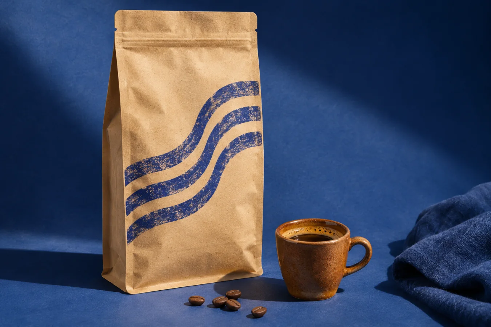

كاكاو وبندق
قوام ممتلئ ونهاية تشبه الشوكولاتة الداكنة.
اختر كاكاو وبندققهوة مختصة للتحضير في البيت
اختر النكهة والطحن، وحدّد الكمية وكم مرة تتكرر الشحنة على حسب استهلاكك.
نموذج تجريبي · الحفظ دون دفع أو شحن

ثلاث نكهات، من القوام الغني إلى الإيحاءات الفاكهية.
قوام ممتلئ ونهاية تشبه الشوكولاتة الداكنة.
اختر كاكاو وبندقحموضة فاكهية لطيفة ورائحة زهرية.
اختر توت وياسمينحلاوة هادئة وقوام متوازن للتحضير اليومي.
اختر تمر وكراميلراجع الوزن والسعر لكل شحنة قبل حفظ المسودة.
للترشيح اليدوي اختر طحن الترشيح، ولماكينة الإسبريسو اختر طحن الإسبريسو. إذا عندك طاحونة، اختر الحبوب الكاملة واضبط درجة الطحن بنفسك.
الإيحاءات أوصاف للطعم والرائحة، مثل الكاكاو أو التوت.
يظهر مرجع المسودة بعد الحفظ. احتفظ به قبل مغادرة الصفحة، فالنموذج لا يستعيد المسودة عند العودة. يحتفظ النموذج بالاختيارات سبعة أيام تقريبًا، دون اسم أو رقم جوال.